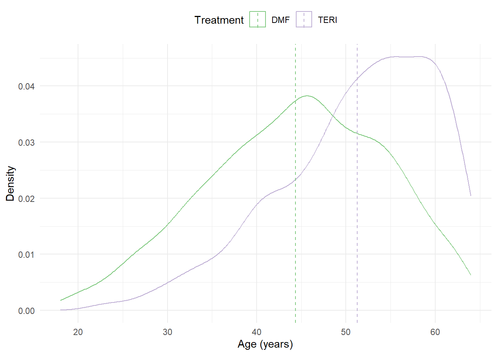
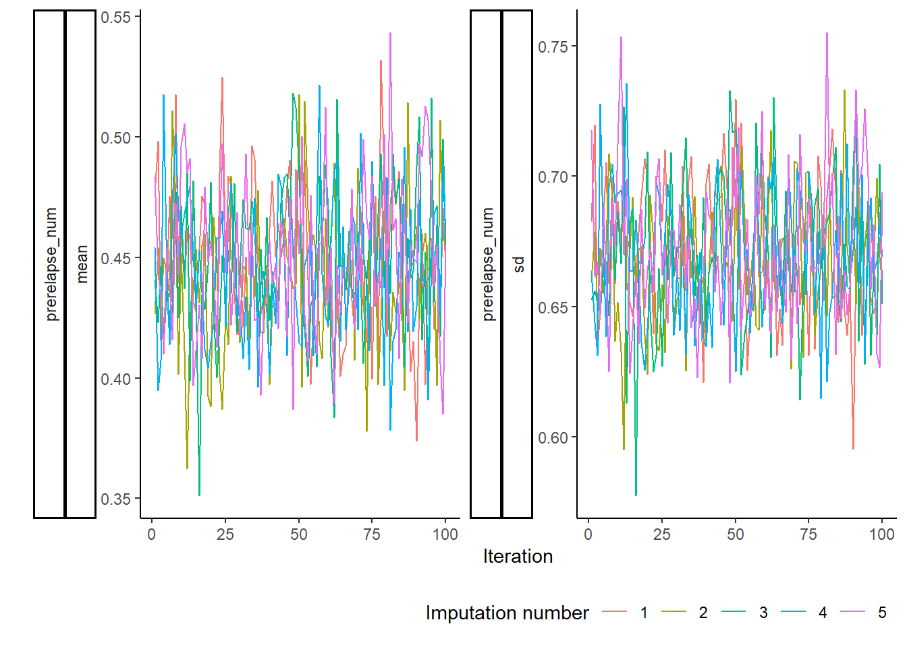

library(mice)
library(dplyr)
library(ggmice)
library(MatchThem)1 Dealing with missing data
In this example, we consider the estimation of comparative treatment effects in the absence of treatment-effect heterogeneity.
1.1 Setup
1.1.1 Prepare R environment
1.1.2 Generating an observational dataset
We can simulate an observational dataset of \(N = 3000\) patients as follows:
data_noHTE <- generate_data(n = 3000, seed = 1234) This dataset does not (yet) contain any missing values;
The simulated dataset contains two treatment groups with differences in baseline characteristics. For example, the figure below shows that we have baseline imbalance in age.

1.1.3 Generating missing values
Missing values can be generated using the function getmissdata(), which considers the following patterns of missingness for the previous number of relapses (prerelapse_num):
- MAR: missingness depends on
ageandsex - MART: missingness depends on
age,sexand the treatment variabletreatment - MARTY: missingness depends on
age,sex,treatmentand the outcome variabley - MNAR: missingness depends on
age,sexandprerelapse_num
mdata_noHTE <- getmissdata(data_noHTE, "MART")After introducing missing values, we only have complete data for \(N=\) 946 patients.
| DMF (N=2265) |
TERI (N=735) |
Overall (N=3000) |
|
|---|---|---|---|
| Age (years) | |||
| Mean (SD) | 44.4 (10.0) | 51.3 (8.72) | 46.2 (10.1) |
| Median [Min, Max] | 45.0 [18.0, 64.0] | 53.0 [23.0, 64.0] | 47.0 [18.0, 64.0] |
| Missing | 248 (10.9%) | 57 (7.8%) | 305 (10.2%) |
| Female Sex | |||
| Yes | 1740 (76.8%) | 526 (71.6%) | 2266 (75.5%) |
| No | 525 (23.2%) | 209 (28.4%) | 734 (24.5%) |
| Efficacy of previous DMT | |||
| None | 740 (32.7%) | 325 (44.2%) | 1065 (35.5%) |
| Low | 190 (8.4%) | 59 (8.0%) | 249 (8.3%) |
| Medium or High | 830 (36.6%) | 246 (33.5%) | 1076 (35.9%) |
| Missing | 505 (22.3%) | 105 (14.3%) | 610 (20.3%) |
| Prior medical costs | |||
| Mean (SD) | 9970 (10700) | 25500 (35400) | 13900 (21200) |
| Median [Min, Max] | 6530 [164, 102000] | 12500 [259, 337000] | 7450 [164, 337000] |
| Missing | 257 (11.3%) | 52 (7.1%) | 309 (10.3%) |
| Number of prior symptoms | |||
| 0 | 157 (6.9%) | 58 (7.9%) | 215 (7.2%) |
| 1 | 1169 (51.6%) | 411 (55.9%) | 1580 (52.7%) |
| >=2 | 435 (19.2%) | 159 (21.6%) | 594 (19.8%) |
| Missing | 504 (22.3%) | 107 (14.6%) | 611 (20.4%) |
| Number of prior relapses | |||
| Mean (SD) | 0.453 (0.671) | 0.408 (0.646) | 0.436 (0.662) |
| Median [Min, Max] | 0 [0, 4.00] | 0 [0, 3.00] | 0 [0, 4.00] |
| Missing | 1365 (60.3%) | 152 (20.7%) | 1517 (50.6%) |
1.2 Analysis of incomplete data
1.2.1 Complete Case Analysis
Below, we describe how to estimate the ATE using propensity score matching.
impdata <- mdata_noHTE[complete.cases(mdata_noHTE), ]
# Apply Matching
mout <- matchit(DMF ~ age + female + prevDMTefficacy + premedicalcost + prerelapse_num,
data = impdata,
family = binomial,
method = "full",
caliper = 0.2,
estimand = "ATE",
replace = FALSE)
mdata <- as.data.table(match.data(mout))
match_mod <- glm("y ~ DMF + offset(log(years))",
family = poisson(link = "log"),
data = mdata,
weights = weights)
# Estimate robust variance-covariance matrix
tx_var <- vcovCL(match_mod, cluster = ~ subclass, sandwich = TRUE) We can extract the treatment effect estimate as follows:
# Treatment effect estimate (log rate ratio)
coef(match_mod)["DMF"] DMF
-0.3524863 # Standard error
sqrt(tx_var["DMF", "DMF"])[1] 0.14982111.2.2 Multiple Imputation (within method)
In this approach, we will generate \(m=5\) imputed datasets and perform matching within each imputed dataset. We first need to specify how the variables prevDMTefficacy, premedicalcost, numSymptoms, prerelapse_num and age will be imputed:
# We add a covariate for log(years)
impdata <- mdata_noHTE %>% mutate(logyears = log(years))
# Specify the conditional imputation models
form_y <- list(prevDMTefficacy ~ age + female + logyears + premedicalcost + numSymptoms +
treatment + prerelapse_num + y,
premedicalcost ~ age + female + logyears + prevDMTefficacy + numSymptoms +
treatment + prerelapse_num + y,
numSymptoms ~ age + female + premedicalcost + logyears + prevDMTefficacy +
prerelapse_num + treatment + y,
prerelapse_num ~ age + female + premedicalcost + logyears + prevDMTefficacy +
numSymptoms + treatment + y,
age ~ prerelapse_num + female + premedicalcost + logyears + prevDMTefficacy +
numSymptoms + treatment + y)
form_y <- name.formulas(form_y)
# Adopt predictive mean matching for imputing the incomplete variables
imp0 <- mice(impdata, form = form_y, maxit = 0)
method <- imp0$method
method["numSymptoms"] <- "pmm"
method["prevDMTefficacy"] <- "pmm"
# Generate 5 imputed datasets
imp <- mice(impdata, form = form_y, method = method, m = 5, maxit = 100)We can now estimate the ATE using propensity score analysis in each of the imputed datasets. We here adopt full matching without replacement.
# Matching based on PS model
mout <- matchthem(DMF ~ age + female + prevDMTefficacy + premedicalcost + prerelapse_num,
datasets = imp,
approach = "within",
method = "full",
caliper = 0.2,
family = binomial,
estimand = "ATE",
distance = "glm",
link = "logit",
replace = FALSE) The results are then combined using Rubin’s rules. We adopt robust standard errors to account for clustering of matched individuals.
match_mod <- summary(pool(with(mout, svyglm(y ~ DMF + offset(log(years)),
family = poisson(link = "log")),
cluster = TRUE)), conf.int = TRUE)We can extract the treatment effect estimate and corresponding standard error as follows:
# Treatment effect estimate (log rate ratio)
(match_mod %>% filter(term == "DMF"))$estimate[1] -0.1172783# Standard error
(match_mod %>% filter(term == "DMF"))$std.error[1] 0.18952771.2.3 Multiple Imputation (across method)
# Matching based on PS model
mout <- matchthem(DMF ~ age + female + prevDMTefficacy + premedicalcost + prerelapse_num,
datasets = imp,
approach = "across",
method = "full",
caliper = 0.2,
family = binomial,
estimand = "ATE",
distance = "glm",
link = "logit",
replace = FALSE) The results are then combined using Rubin’s rules. We adopt robust standard errors to account for clustering of matched individuals.
match_mod <- summary(pool(with(mout, svyglm(y ~ DMF + offset(log(years)),
family = poisson(link = "log")),
cluster = TRUE)), conf.int = TRUE)We can extract the treatment effect estimate and corresponding standard error as follows:
# Treatment effect estimate (log rate ratio)
(match_mod %>% filter(term == "DMF"))$estimate[1] -0.2838299# Standard error
(match_mod %>% filter(term == "DMF"))$std.error[1] 0.12218761.3 Convergence checking
We can inspect convergence for the imputed variable prerelapse_num using a trace plot:
plot_trace(imp, vrb = "prerelapse_num")
1.4 Results
Analysis methods:
- Full Data: The treatment effect is estimated in the original data of \(N=3000\) patients where no missing values are present. This estimate can be used as a benchmark to compare the missing data methods.
- Complete Case Analysis: The treatment effect is estimated using all data from \(N=\) 946 patients that do not have any missing values.
- Missing Indicator: The treatment effect is estimated in the incomplete dataset of \(N=3000\) patients. The propensity score model includes a missing indicator variable for each incomplete covariate.
- MICE (within method): A treatment effect is estimated within each imputed dataset using propensity score analysis. Using Rubin’s rule, the five treatment effects are combined into a single treatment effect.
- MICE (ITE method): The missing covariates and potential outcomes are imputed simultaneously. Treatment effect estimates are derived by taking the average of the individualized treatment effect estimates Y|DMF - Y|TERI.
